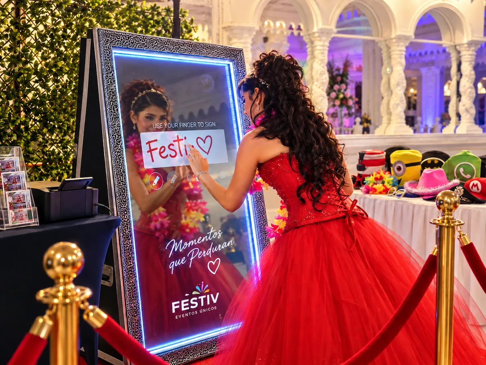

Sobre Festiv
Hay celebraciones que solo ocurren una vez
Detrás de una boda, unos XV años, un aniversario o una celebración familiar puede haber meses de preparación, esfuerzo e ilusión.
Festiv existe para ayudar a las personas a vivir, disfrutar y conservar esos momentos. Creamos experiencias que acompañan la celebración sin ocupar su lugar: los protagonistas siempre son la persona festejada, los anfitriones y quienes comparten ese día con ellos.

Nuestro propósito
Cada detalle cuenta cuando el momento es importante
Queremos que quienes organizan una celebración puedan vivirla con mayor tranquilidad. Para lograrlo, cuidamos la preparación, la presentación y la atención durante cada experiencia.
Nuestro compromiso es comunicar con claridad, cumplir lo acordado y responder de manera responsable antes, durante y después del evento.
Nuestro punto de partida
Aprendemos donde suceden los eventos
Quinta San José ha sido el punto de partida de Festiv. Estar cerca de celebraciones reales nos permite conocer la emoción de quienes las organizan, observar cómo participan los invitados y entender cómo la atención a cada detalle influye en su experiencia.
Cada evento nos ayuda a mejorar nuestros procesos, perfeccionar las experiencias actuales y descubrir nuevas formas de acompañar momentos importantes.
Lo que nos guía
Significado, cuidado y recuerdo
Tres ideas orientan la manera en que diseñamos nuestras experiencias y participamos en cada celebración.
- Significado Entendemos que detrás de cada evento hay personas, esfuerzo, ilusión y afecto. Antes de pensar en el equipo, buscamos comprender qué hace importante esa celebración.
- Cuidado Nos preparamos, comunicamos con claridad y atendemos los detalles que están en nuestras manos. La confianza se construye cumpliendo lo acordado.
- Recuerdo Creamos experiencias que permiten conservar algo de lo vivido: una fotografía, un video, una historia o un momento compartido.
Un proyecto en evolución
Las cabinas son nuestro comienzo, no nuestro límite
El Espejo Mágico y la Cabina 360 son hoy nuestra primera forma concreta de cumplir el propósito de Festiv. A partir de ellas queremos seguir explorando experiencias que ayuden a recibir, sorprender, entretener y conservar recuerdos.
Con el tiempo, nuestra visión es reunir experiencias propias, nuevas ideas, colaboradores confiables y herramientas útiles que ayuden a las personas a inspirarse, planear y celebrar. Cada propuesta deberá probarse y estar lista antes de formar parte de nuestra oferta.
Hablemos de tu próxima celebración
Cuéntanos la fecha, la ubicación y lo que tienes planeado. Te ayudaremos a elegir una experiencia que se integre a tu evento.